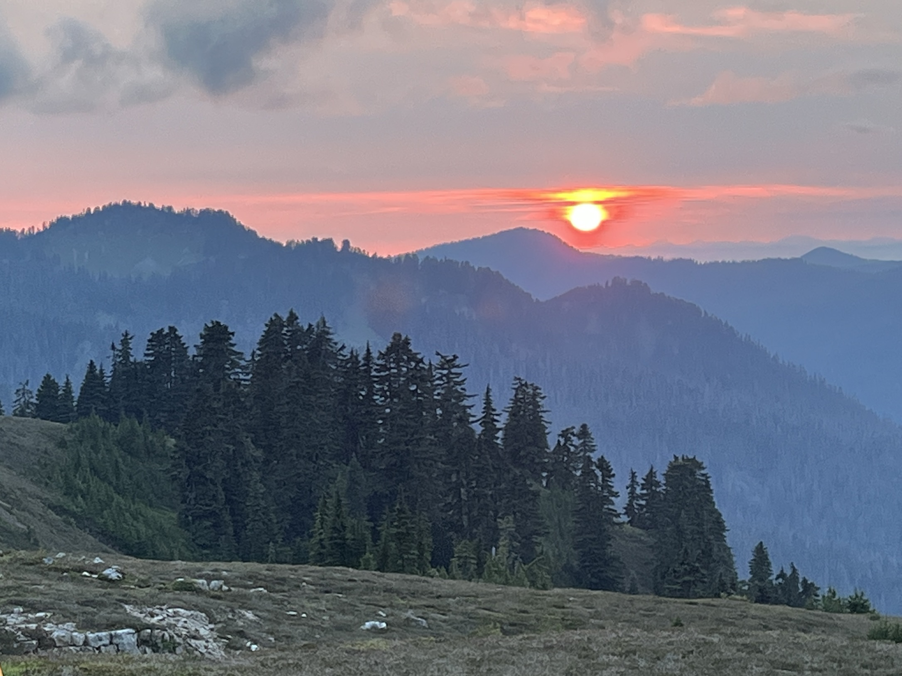

Wildfire Smoke in Yakima County, WA
U.S. Forest Service, Public domain, via Wikimedia Commons
{kind=link}
Description
The greater Yakima region experiences a very high level of fine particulate matter (PM2.5) pollution as compared to other areas in Washington [1], which is linked to elevated incidence of lung disease and all-cause mortality [2]. Wildfire smoke is a chief driver of PM2.5 in the region [1], and is more damaging to health than other forms of particulate pollution [3].
In the Yakima area, farmworkers are at disproportionate risk of experiencing these negative health impacts. They work long days outdoors inhaling smoke during fire season, and are already at risk from many occupational hazards like heat illness and physical injury. Many of the existing policies do not adequately protect farmworkers from wildfire smoke and air pollution.
In 2021, the Washington Legislature passed the Climate Commitment Act (CCA), which directed the Department of Ecology to define communities which are overburdened by criteria air pollutants. Through this process, sixteen communities were identified including three surrounding Yakima: East Yakima, Lower Yakima Valley, and Moxee Valley.
This project aims to describe the outsized burden of air pollution, from all sources as well as from wildfires specifically, in Yakima county. I then identify and evaluate potential policy items to alleviate the burden in this region. I conducted this analysis in partnership with staff from Washington Conservation Action (WCA), a non-profit conservation oriented policy group in WA state.
Acknowledgements
Many thanks to the team at Washington Conservation Action for guiding this work and providing mentorship and oversight. Thank you also to the various faculty at the University of Washington Department of Health Systems & Population Health who lent their advice and expertise through this process.